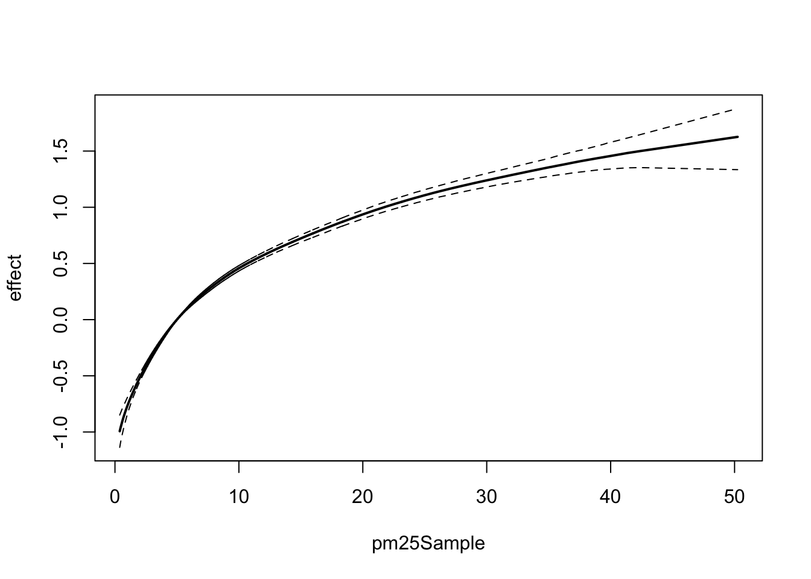
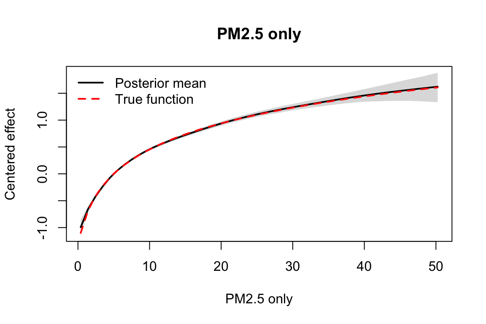

Last updated: 2026-10-03
Checks: 7 0
Knit directory: near_monotone_smoothing/
This reproducible R Markdown analysis was created with workflowr (version 1.7.2). The Checks tab describes the reproducibility checks that were applied when the results were created. The Past versions tab lists the development history.
Great! Since the R Markdown file has been committed to the Git repository, you know the exact version of the code that produced these results.
Great job! The global environment was empty. Objects defined in the global environment can affect the analysis in your R Markdown file in unknown ways. For reproduciblity it’s best to always run the code in an empty environment.
The command set.seed(20240619) was run prior to running
the code in the R Markdown file. Setting a seed ensures that any results
that rely on randomness, e.g. subsampling or permutations, are
reproducible.
Great job! Recording the operating system, R version, and package versions is critical for reproducibility.
Nice! There were no cached chunks for this analysis, so you can be confident that you successfully produced the results during this run.
Great job! Using relative paths to the files within your workflowr project makes it easier to run your code on other machines.
Great! You are using Git for version control. Tracking code development and connecting the code version to the results is critical for reproducibility.
The results in this page were generated with repository version c20e64c. See the Past versions tab to see a history of the changes made to the R Markdown and HTML files.
Note that you need to be careful to ensure that all relevant files for
the analysis have been committed to Git prior to generating the results
(you can use wflow_publish or
wflow_git_commit). workflowr only checks the R Markdown
file, but you know if there are other scripts or data files that it
depends on. Below is the status of the Git repository when the results
were generated:
Ignored files:
Ignored: .DS_Store
Ignored: .claude/
Ignored: .vscode/
Ignored: BayesGP.Rcheck/
Ignored: BayesGP/
Ignored: BayesGP_0.1.2.tar.gz
Ignored: BayesGP_0.1.3.tar.gz
Ignored: Rplots.pdf
Ignored: analysis/.DS_Store
Ignored: analysis/.RData
Ignored: analysis/.Rhistory
Ignored: analysis/casecross.html
Ignored: code/.DS_Store
Ignored: code/.Rhistory
Ignored: code/fitGP_cc.o
Ignored: code/fitGP_cc.so
Ignored: code/fitGP_known_sd.o
Ignored: code/fitGP_known_sd.so
Ignored: code/sim_MGP.o
Ignored: code/sim_MGP.so
Ignored: outputs/
Ignored: talk/.DS_Store
Ignored: talk/BIRS-IMAG.key
Ignored: talk/Template/
Ignored: talk/presentation2024-latex-rebuild.pptx
Ignored: talk/presentation2024.key
Ignored: talk/presentation2024.key.backup-2026-05-11
Note that any generated files, e.g. HTML, png, CSS, etc., are not included in this status report because it is ok for generated content to have uncommitted changes.
These are the previous versions of the repository in which changes were
made to the R Markdown
(analysis/casecross_simulation_demo.rmd) and HTML
(docs/casecross_simulation_demo.html) files. If you’ve
configured a remote Git repository (see ?wflow_git_remote),
click on the hyperlinks in the table below to view the files as they
were in that past version.
| File | Version | Author | Date | Message |
|---|---|---|---|---|
| Rmd | d981500 | Ziang Zhang | 2026-10-03 | Remove iCloud duplicate files; load BayesGP fork in case-crossover demo |
| Rmd | e65c248 | Ziang Zhang | 2026-10-03 | Initial commit of near-monotone smoothing workflowr project |
This file shows a minimal workflow for:
dailymort_pulm_nonsenior with
simulate_casecrossover_data();BayesGP;predict();The simulation below uses deliberately high-contrast effects and sets the total case count in each stratum explicitly before the multinomial redistribution. The fit uses all strata under the grouped multinomial case-crossover likelihood.
knitr::opts_chunk$set(
echo = TRUE,
message = FALSE,
warning = FALSE,
fig.align = "center"
)
source("analysis/simulate_casecrossover_data.R")
devtools::load_all("BayesGP", quiet = TRUE)Registered S3 method overwritten by 'LaplacesDemon':
method from
print.laplace aghqWarning: package 'testthat' was built under R version 4.5.2Define small helpers for extracting and plotting posterior effects.
Because the model uses initial_location = pm25_reference
and family = "cc" has no intercept, predict()
should already return an effect that is anchored at the reference
value.
posterior_effect <- function(fit, data, variable, true_fun, n_grid = 50,
reference = NULL) {
variable_range <- range(data[[variable]], na.rm = TRUE)
grid_values <- seq(
variable_range[1],
variable_range[2],
length.out = n_grid
)
if (!is.null(reference)) {
if (!is.numeric(reference) || length(reference) != 1 || !is.finite(reference)) {
stop("`reference` must be NULL or a finite numeric scalar.", call. = FALSE)
}
if (reference < variable_range[1] || reference > variable_range[2]) {
stop("`reference` must lie inside the observed range of `variable`.", call. = FALSE)
}
grid_values <- sort(unique(c(grid_values, reference)))
}
newdata <- data.frame(grid_values)
names(newdata) <- variable
summary_df <- predict(
fit,
newdata = newdata,
variable = variable,
only.samples = FALSE
)
summary_df$true <- true_fun(summary_df[[variable]])
summary_df
}
plot_effect <- function(effect_df, variable, x_label) {
x <- effect_df[[variable]]
y_range <- range(
effect_df$q0.025,
effect_df$q0.975,
effect_df$true,
finite = TRUE
)
plot(
x,
effect_df$mean,
type = "n",
ylim = y_range,
xlab = x_label,
ylab = "Centered effect",
main = x_label
)
polygon(
c(x, rev(x)),
c(effect_df$q0.025, rev(effect_df$q0.975)),
col = grDevices::adjustcolor("grey70", alpha.f = 0.45),
border = NA
)
lines(x, effect_df$mean, lwd = 2)
lines(x, effect_df$true, col = "red", lwd = 2, lty = 2)
legend(
"topleft",
legend = c("Posterior mean", "True function"),
lty = c(1, 2),
lwd = 2,
col = c("black", "red"),
bty = "n"
)
}data_env <- new.env(parent = emptyenv())
load("data/data_CD3518_sample_2.RData", envir = data_env)
base_data <- data_env$data_CD3518_sample_2
simulation_base_data <- base_data
simulation_base_data$strata <- format(simulation_base_data$Date, "%Y%b%A")
cases_per_stratum <- 50L
pm25_reference <- 5
f_pm25_true <- function(x) {
0.75 * (log1p(x) - log1p(pm25_reference))
}
true_deriv <- 0.75 * 1/(pm25_reference + 1)The simulation helper also accepts NULL effects. Any
omitted effect is treated as zero in the true linear predictor. This
makes it easy to create a one-function data-generating process and fit
the matching one-function model.
pm25_only_data <- simulate_casecrossover_data(
f_pm25 = f_pm25_true,
data = simulation_base_data,
seed = 20260425,
stratum_total_cases = cases_per_stratum
)
pm25_only_totals <- tapply(
pm25_only_data$dailymort_pulm_nonsenior,
pm25_only_data$strata,
sum
)
stopifnot(all(pm25_only_totals == cases_per_stratum))
pm25_only_fit_data <- as.data.frame(
pm25_only_data[order(pm25_only_data$strata, pm25_only_data$Date), ]
)
data.frame(
rows = nrow(pm25_only_fit_data),
strata = length(unique(pm25_only_fit_data$strata)),
total_cases = sum(pm25_only_fit_data$dailymort_pulm_nonsenior),
min_cases_per_stratum = min(pm25_only_totals),
max_cases_per_stratum = max(pm25_only_totals)
) rows strata total_cases min_cases_per_stratum max_cases_per_stratum
1 5970 1491 74550 50 50Fit only the PM2.5 smooth term:
pm25_shift <- pm25_reference
fit_pm25_only <- model_fit(
formula = dailymort_pulm_nonsenior ~
f(
pm25Sample,
model = "tiwp2",
computation = "fem",
initial_location = pm25_reference,
a = 2, # parameter for mgp or tiwp2 only, not for other models
# boundary.prior = list(mean = true_deriv, prec = 1e10),
normalized_boundary = TRUE
),
family = "cc",
strata = "strata",
weight = NULL,
data = pm25_only_fit_data,
method = "aghq",
aghq_k = 3
)
plot(fit_pm25_only)
est_derivative <- mean(extract_boundary_samples(fit_pm25_only, "pm25Sample"))
print(
data.frame(
true_derivative = true_deriv,
estimated_derivative = est_derivative
)
) true_derivative estimated_derivative
1 0.125 0.1303994Extract and plot the PM2.5 posterior curve from the simpler model:
pm25_only_posterior <- posterior_effect(
fit = fit_pm25_only,
data = pm25_only_fit_data,
variable = "pm25Sample",
true_fun = f_pm25_true,
reference = pm25_reference
)
plot_effect(pm25_only_posterior, "pm25Sample", "PM2.5 only")
sessionInfo()R version 4.5.1 (2025-06-13)
Platform: aarch64-apple-darwin20
Running under: macOS Sequoia 15.6.1
Matrix products: default
BLAS: /System/Library/Frameworks/Accelerate.framework/Versions/A/Frameworks/vecLib.framework/Versions/A/libBLAS.dylib
LAPACK: /Library/Frameworks/R.framework/Versions/4.5-arm64/Resources/lib/libRlapack.dylib; LAPACK version 3.12.1
locale:
[1] en_CA/en_CA/en_CA/C/en_CA/en_CA
time zone: America/Chicago
tzcode source: internal
attached base packages:
[1] stats graphics grDevices utils datasets methods base
other attached packages:
[1] BayesGP_0.1.3 testthat_3.3.1
loaded via a namespace (and not attached):
[1] tidyselect_1.2.1 hdrcde_3.4 dplyr_1.1.4
[4] farver_2.1.2 loo_2.8.0 S7_0.2.2
[7] bitops_1.0-9 fastmap_1.2.0 RCurl_1.98-1.17
[10] pracma_2.4.6 promises_1.5.0 digest_0.6.39
[13] lifecycle_1.0.5 cluster_2.1.8.1 StanHeaders_2.32.10
[16] ellipsis_0.3.2 statmod_1.5.1 magrittr_2.0.5
[19] compiler_4.5.1 rlang_1.2.0 sass_0.4.10
[22] tools_4.5.1 yaml_2.3.12 data.table_1.17.8
[25] knitr_1.50 curl_7.0.0 pkgbuild_1.4.8
[28] mclust_6.1.2 RColorBrewer_1.1-3 rainbow_3.8
[31] pkgload_1.4.1 KernSmooth_2.23-26 fda_6.3.0
[34] numDeriv_2016.8-1.1 workflowr_1.7.2 purrr_1.2.0
[37] desc_1.4.3 grid_4.5.1 pcaPP_2.0-5
[40] stats4_4.5.1 git2r_0.36.2 colorspace_2.1-2
[43] inline_0.3.21 ggplot2_4.0.3 scales_1.4.0
[46] MASS_7.3-65 dichromat_2.0-0.1 cli_3.6.6
[49] mvtnorm_1.3-3 rmarkdown_2.30 generics_0.1.4
[52] remotes_2.5.0 mvQuad_1.0-8 otel_0.2.0
[55] RcppParallel_5.1.11-1 rstudioapi_0.17.1 LaplacesDemon_16.1.8
[58] sessioninfo_1.2.3 fds_1.8 polynom_1.4-1
[61] cachem_1.1.0 rstan_2.32.7 stringr_1.6.0
[64] tmbstan_1.0.91 splines_4.5.1 parallel_4.5.1
[67] aghq_0.4.1 matrixStats_1.5.0 vctrs_0.7.3
[70] devtools_2.4.6 V8_8.0.1 Matrix_1.7-4
[73] jsonlite_2.0.0 jquerylib_0.1.4 glue_1.8.1
[76] codetools_0.2-20 stringi_1.8.9 gtable_0.3.6
[79] later_1.4.4 QuickJSR_1.8.1 sfsmisc_1.1-23
[82] tibble_3.3.0 pillar_1.11.1 brio_1.1.5
[85] htmltools_0.5.9 deSolve_1.40 R6_2.6.1
[88] TMB_1.9.23 ks_1.15.1 rprojroot_2.1.1
[91] evaluate_1.0.5 lattice_0.22-7 memoise_2.0.1
[94] httpuv_1.6.16 bslib_0.9.0 Rcpp_1.1.1-1.1
[97] gridExtra_2.3 whisker_0.4.1 xfun_0.55
[100] fs_1.6.6 usethis_3.2.1 pkgconfig_2.0.3